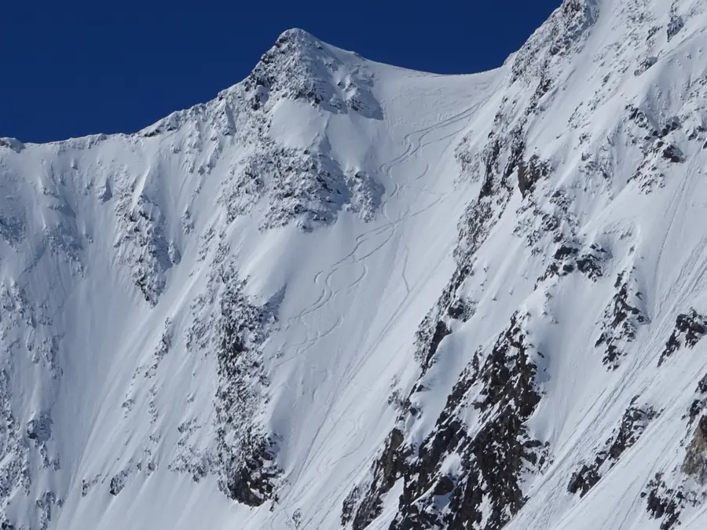
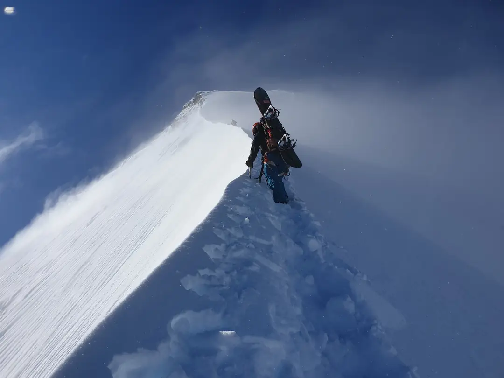
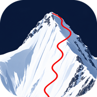
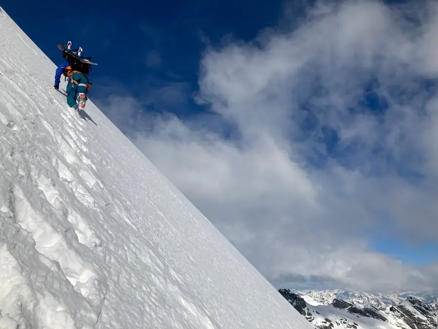
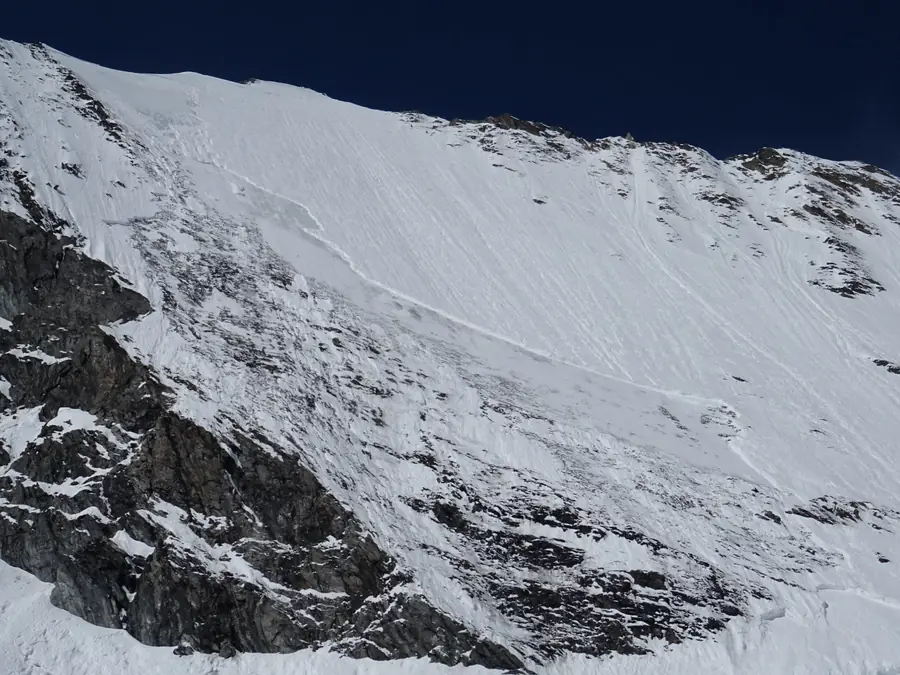
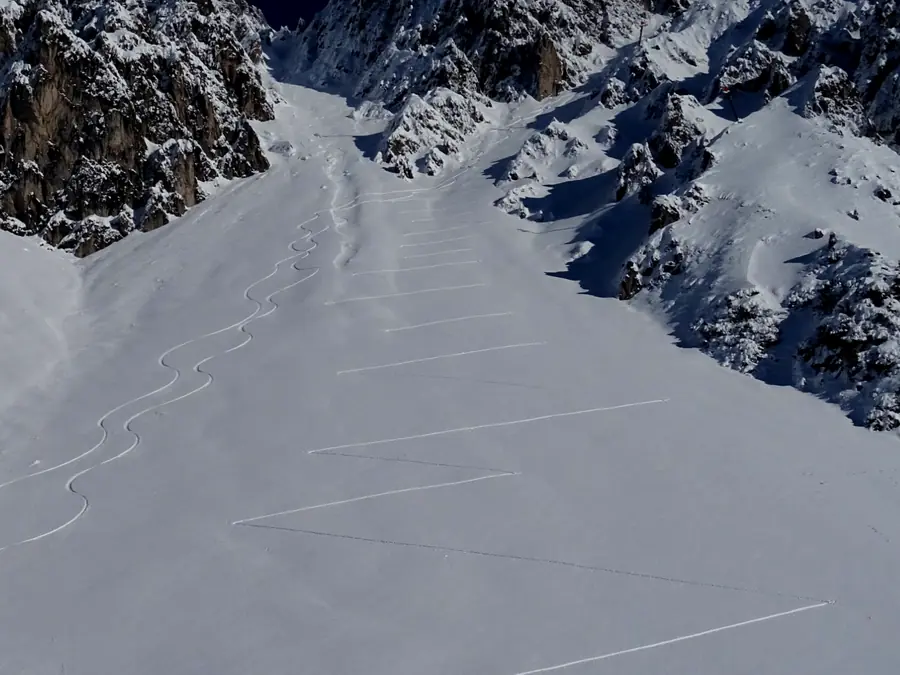
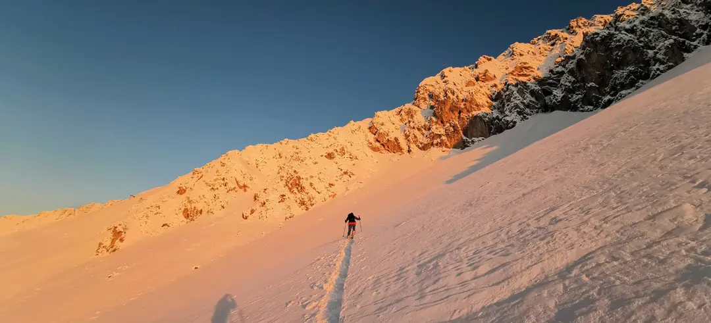

Gelände lesen
Rinnen, Grate und Hänge in 3D, mit Luftbild und Winteransicht. So siehst du schon zu Hause, wo eine Linie durchgeht.


Firstline Map Karte öffnenDie 3D-Karte für Skitouren in den Alpen. Gelände, Hangneigung und Lawinenlage auf einen Blick, direkt im Browser.
Karte öffnen
Rinnen, Grate und Hänge in 3D, mit Luftbild und Winteransicht. So siehst du schon zu Hause, wo eine Linie durchgeht.

Wie steil ist der Hang wirklich? Die Karte färbt Hänge ab 30 Grad in Stufen bis über 45 Grad ein. So weißt du, wo es steil wird, bevor du dort stehst.

Aktuelle Lawinenberichte der Warndienste im Alpenraum direkt auf der Karte, dazu Daten von Messstationen und Wetter für den Punkt, den du antippst.

Der Tourenplaner legt Aufstieg und Abfahrt ins Gelände, mit Höhenprofil und Spitzkehren, so wie du selbst gehen würdest.

Speichere dein Gebiet vorab. Karte, Gelände und Hangneigung funktionieren dann auch dort, wo kein Empfang mehr ist.
Ohne Konto, ohne Werbung, ohne Tracking.
Gebiete speichern und ohne Empfang nutzen.
Läuft am Handy und am Computer, auch als App installierbar.
Firstline Map hilft bei der Planung, ersetzt aber nicht deine eigene Beurteilung vor Ort. Lies vor jeder Tour den aktuellen Lawinenlagebericht und entscheide im Gelände selbst.